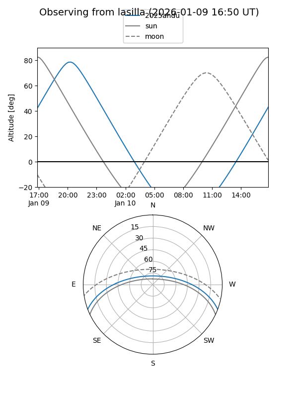
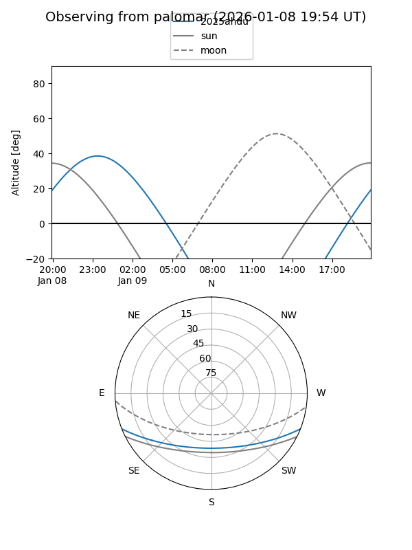

2025ahdu
Target 2025ahdu at 2025-12-19 03:42
Aliases and brokers:
FINK: fink-portal.org/ZTF25achxqzi
Lasair: lasair-ztf.lsst.ac.uk/objects/ZTF25achxqzi
ALeRCE: alerce.online/object/ZTF25achxqzi
TNS: wis-tns.org/object/2025ahdu
YSE: ziggy.ucolick.org/yse/transient_detail/2025ahdu
alt names
ZTF25achxqzi (ztf,fink_ztf)
2025ahdu (tns,yse)
Coordinates:
equatorial (ra, dec) = 341.8719,-18.18438
equatorial (HMS+DMS) = 22:47:29.26,-18:11:03.77
galactic (l, b) = (43.7693,-60.13083)
Flags:
Photometry:
last ztfg=19.03, ztfr=19.25
1 ztfg, 1 ztfr detections
Lightcurve

Visibility


Additional plots